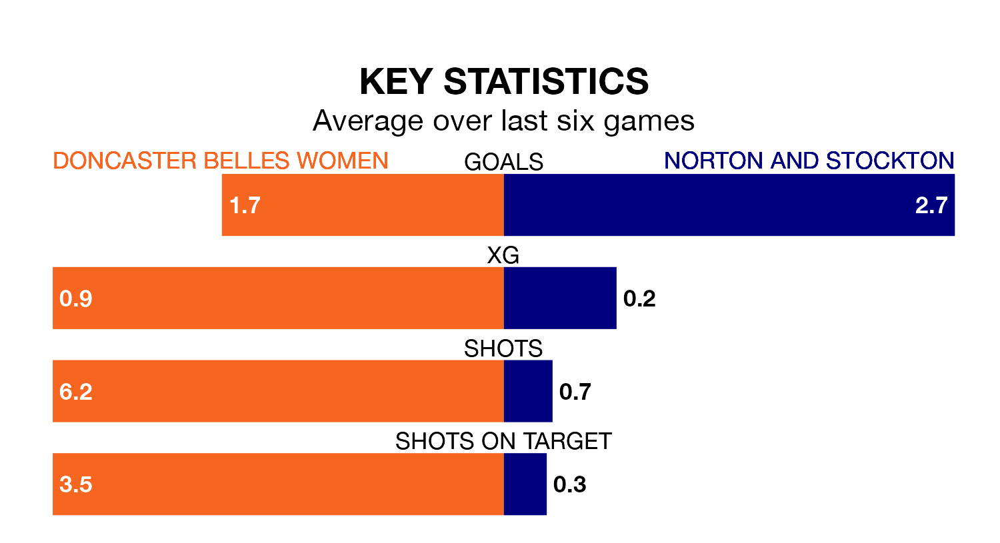

Doncaster Belles Women host Norton and Stockton on Sunday in Women's National League Division One North.
In their last league match, on January 28, Doncaster Belles beat Chorley Women 4-1 away.
Norton & Stockton lost, 3-2 at home against Hull City LFC on February 4.
With 24 goals in 12 games so far this season, Doncaster Belles are scoring more than average in the league with 2.0 goals per game. But they are conceding more than average too, letting in 28 goals at a rate of 2.3 per game.
Norton & Stockton, meanwhile, are below average scorers, with 1.6 goals per game, compared to a league average of 1.7. They have also conceded 1.6 goals per game.
The hosts are in mixed form in Women's National League Division One North, with two wins and a draw from their last six games.
With three wins and a draw over that period, the away side's form is better – they have taken 10 points from 18, compared to Doncaster Belles's seven.
Norton & Stockton are eighth in the table after 12 games, of which they have won three and drawn four, earning 13 points.
Doncaster Belles are one place ahead of Norton & Stockton in seventh, with four wins and two draws putting them on 14 points.
Updated: 10:01 (UTC), 06/02/24